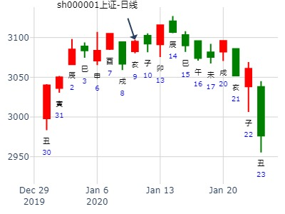
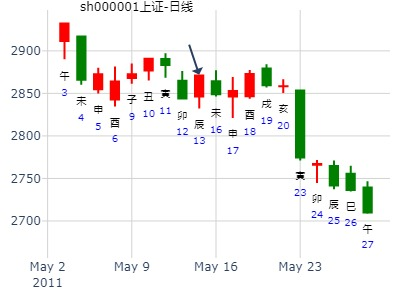
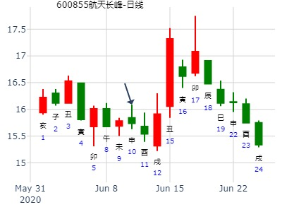
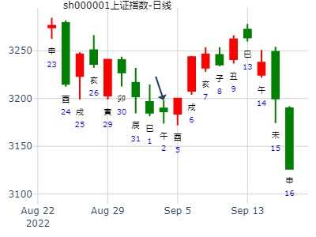
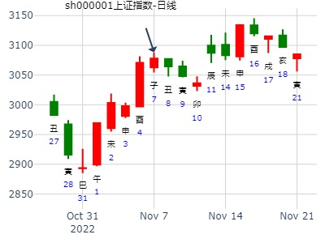

测600030中信证券在2015年1月19日-1月23日走势
出生：1979 年 性别：男
公历起卦时间：2015年1月18日14时55分 (手工指定)
干支：甲午年 丁丑月 甲午日 辛未时 （日空：辰巳）
艮宫：风山渐 (归魂) 艮宫：风山渐 (归魂)
六神 伏神 本 卦 变 卦
玄武 官鬼辛卯木 ▅▅▅▅▅ 应 官鬼辛卯木 ▅▅▅▅▅ 应
白虎 妻财丙子水 父母辛巳火 ▅▅▅▅▅ 父母辛巳火 ▅▅▅▅▅
腾蛇 兄弟辛未土 ▅▅ ▅▅ 兄弟辛未土 ▅▅ ▅▅
勾陈 子孙丙申金 ▅▅▅▅▅ 世 子孙丙申金 ▅▅▅▅▅ 世
朱雀 父母丙午火 ▅▅ ▅▅ 父母丙午火 ▅▅ ▅▅
青龙 兄弟丙辰土 ▅▅ ▅▅ 兄弟丙辰土 ▅▅ ▅▅
本周股票财运？
今天9日股票财运 -手摇卦
公历时间：2020年1月9日8时1分
干 支：己亥年 丁丑月 辛亥日 壬辰时
旬 空：辰巳 申酉 寅卯 午未
神 煞：驿马─巳 桃花─子 日禄─酉 贵人─寅，午
艮宫：风山渐（归魂）
六神 伏 神 【本 卦】
螣蛇 ▄▄▄▄▄ 官鬼辛卯木 应
勾陈 妻财丙子水 ▄▄▄▄▄ 父母辛巳火
朱雀 ▄▄ ▄▄ 兄弟辛未土
青龙 ▄▄▄▄▄ 子孙丙申金 世
玄武 ▄▄ ▄▄ 父母丙午火
白虎 ▄▄ ▄▄ 兄弟丙辰土
注：勉强以大盘看

时间: 2014-02-05
干支: 甲午年丙寅月丁未日 (旬空: 寅卯 )
渐静卦 (归魂)
青龙 ▅▅▅▅▅ 官鬼卯木 应
玄武 妻财子水▅▅▅▅▅ 父母巳火
白虎 ▅▅ ▅▅ 兄弟未土
腾蛇 ▅▅▅▅▅ 子孙申金 世
勾陈 ▅▅ ▅▅ 父母午火
朱雀 ▅▅ ▅▅ 兄弟辰土
财于月休日克，又绝于飞神，状态不佳 。
子孙持世，如果子孙为福神的话，月破，须出月或实破的申月才行。
1.兄弟丙辰土，股市大跌。财运不好。
3.申月实破，世爻恢复状态
一般午月财月破之月为最低点。
性别：男 占事：002697红旗连锁明天涨跌
公历起卦时间：2017年2月7日16时0分 (电脑自动)
干支：丁酉年 壬寅月 乙丑日 甲申时 （日空：戌亥）
神煞：驿马－亥 桃花－午 日禄－卯 贵人－子，申
渐静卦 (归魂)
玄武 ▅▅▅▅▅ 官鬼卯木 应
白虎 妻财子水▅▅▅▅▅ 父母巳火
腾蛇 ▅▅ ▅▅ 兄弟未土
勾陈 ▅▅▅▅▅ 子孙申金 世
朱雀 ▅▅ ▅▅ 父母午火
青龙 ▅▅ ▅▅ 兄弟辰土
测000566海南海药在2020.2.17-2020.2.21走势
公历起卦时间：2020年2月16日11时31分 (手工指定)
干支：庚子年 戊寅月 己丑日 庚午时 （日空：午未）
神煞：驿马－亥 桃花－午 日禄－午 贵人－子，申
风山渐 (归魂)
六神 伏神 本 卦
勾陈 官鬼辛卯木 ▅▅▅▅▅ 应
朱雀 妻财丙子水 父母辛巳火 ▅▅▅▅▅
青龙 兄弟辛未土 ▅▅ ▅▅
玄武 子孙丙申金 ▅▅▅▅▅ 世
白虎 父母丙午火 ▅▅ ▅▅
螣蛇 兄弟丙辰土 ▅▅ ▅▅
注释：入日墓，寅日冲爻？
占事：未来二周大盘
时间: 2015-03-27 9时13分
干支: 乙未年己卯月壬寅日乙巳时 (旬空: 辰巳 )
渐静卦 (归魂)
白虎 ▅▅▅▅▅ 官鬼卯木 应
腾蛇 妻财子水▅▅▅▅▅ 父母巳火
勾陈 ▅▅ ▅▅ 兄弟未土
朱雀 ▅▅▅▅▅ 子孙申金 世
青龙 ▅▅ ▅▅ 父母午火
玄武 ▅▅ ▅▅ 兄弟辰土
马后炮：空下伏神。虽不得日月，却是大涨。
江西铜业三个月走势？
公历起卦时间：2017年3月25日9时22分 (在线摇卦)
干支：丁酉年 癸卯月 辛亥日 癸巳时 （日空：寅卯）
艮宫：风山渐 (归魂) 艮宫：风山渐 (归魂)
六神 伏神 本 卦 变 卦
腾蛇 官鬼辛卯木 ▅▅▅▅▅ 应 官鬼辛卯木 ▅▅▅▅▅ 应
勾陈 妻财丙子水 父母辛巳火 ▅▅▅▅▅ 父母辛巳火 ▅▅▅▅▅
朱雀 兄弟辛未土 ▅▅ ▅▅ 兄弟辛未土 ▅▅ ▅▅
青龙 子孙丙申金 ▅▅▅▅▅ 世 子孙丙申金 ▅▅▅▅▅ 世
玄武 父母丙午火 ▅▅ ▅▅ 父母丙午火 ▅▅ ▅▅
白虎 兄弟丙辰土 ▅▅ ▅▅ 兄弟丙辰土 ▅▅ ▅▅
占事：近半年上证指数走势--打坐卦221211
时间: 2019-03-21 19:25
干支: 己亥年丁卯月丁巳日庚戌时 (旬空: 子丑 )
渐静卦(归魂)
青龙 ▅▅▅▅▅ 官鬼卯木 应
玄武 妻财子水▅▅▅▅▅ 父母巳火
白虎 ▅▅ ▅▅ 兄弟未土
腾蛇 ▅▅▅▅▅ 子孙申金 世
勾陈 ▅▅ ▅▅ 父母午火
朱雀 ▅▅ ▅▅ 兄弟辰土
妻财旬空，子月才有涨。午月冲空也涨了涨。
2019-03-21

3月22至3月26日大盘（周测）
公历时间：2021年3月19日17时49分
干 支：辛丑年 辛卯月 丙寅日 丁酉时
旬 空：辰巳 午未 戌亥 辰巳
神 煞：驿马─申 桃花─卯 日禄─巳 贵人─酉，亥
艮宫：风山渐（归魂）
六神 伏 神 【本 卦】
青龙 ▄▄▄▄▄ 官鬼辛卯木 应
玄武 妻财丙子水 ▄▄▄▄▄ 父母辛巳火
白虎 ▄▄ ▄▄ 兄弟辛未土
螣蛇 ▄▄▄▄▄ 子孙丙申金 世
勾陈 ▄▄ ▄▄ 父母丙午火
朱雀 ▄▄ ▄▄ 兄弟丙辰土
出生年：75年 性别：女 占事：000712锦龙股份何时出货为好
起卦方式：手动摇卦 www.iqing.net 线上排盘系统
公历时间：2007年4月12日8时54分 星期四
干支：丁亥年 甲辰月 丙子日 壬辰时 (旬空：申酉)
神煞：驿马—寅 桃花—酉 日禄—巳 贵人—酉，亥
艮宫：风山渐（归魂） 六神 伏 神 【本 卦】
青龙 ▅▅▅▅▅ 官鬼辛卯木 应
玄武 妻财丙子水 ▅▅▅▅▅ 父母辛巳火
白虎 ▅▅ ▅▅ 兄弟辛未土
螣蛇 ▅▅▅▅▅ 子孙丙申金 世
勾陈 ▅▅ ▅▅ 父母丙午火
朱雀 ▅▅ ▅▅ 兄弟丙辰土
当中有停牌。
本人今日占了17日上市股票的涨跌,望各位易友帮忙看一下:
出生年：1963年 性别：男
占事：17日上市股票的涨跌
起卦方式：手动摇卦 www.iqing.net 线上排盘系统
公历时间：2007年4月14日10时55分 星期六
干支：丁亥年甲辰月戊寅日丁巳时 (旬空：申酉)
神煞：驿马—申 桃花—卯 日禄—巳 贵人—丑，未
艮宫：风山渐（归魂） 六神
伏 神 【本 卦】
朱雀 ▅▅▅▅▅ 官鬼辛卯木 应
青龙 妻财丙子水 ▅▅▅▅▅ 父母辛巳火
玄武 ▅▅ ▅▅ 兄弟辛未土
白虎 ▅▅▅▅▅ 子孙丙申金 世
螣蛇 ▅▅ ▅▅ 父母丙午火
勾陈 ▅▅ ▅▅ 兄弟丙辰土
占事：楚天高速明天还长吗？风山渐静卦。
时间: 2015-04-15 16时5分
干支: 乙未年庚辰月辛酉日丙申时 (旬空: 子丑 )
渐静卦(归魂)
腾蛇 ▅▅▅▅▅ 官鬼卯木 应
勾陈 妻财子水▅▅▅▅▅ 父母巳火
朱雀 ▅▅ ▅▅ 兄弟未土
青龙 ▅▅▅▅▅ 子孙申金 世
玄武 ▅▅ ▅▅ 父母午火
白虎 ▅▅ ▅▅ 兄弟辰土
最后一天上涨见顶。财虽然日助，但是旬空。直接见顶。
占事：5月16-20日大盘涨跌？
公历起卦时间：2011年5月13日15时16分 (手工指定)
干支：辛卯年 癸巳月 戊辰日 庚申时 （日空：戌亥）
神煞：驿马－寅 桃花－酉 日禄－巳 贵人－丑，未
艮宫：风山渐 (归魂) 艮宫：风山渐 (归魂)
六神 伏神 本 卦 变 卦
朱雀 官鬼辛卯木 ▅▅▅▅▅ 应 官鬼辛卯木 ▅▅▅▅▅ 应
青龙 妻财丙子水 父母辛巳火 ▅▅▅▅▅ 父母辛巳火 ▅▅▅▅▅
玄武 兄弟辛未土 ▅▅ ▅▅ 兄弟辛未土 ▅▅ ▅▅
白虎 子孙丙申金 ▅▅▅▅▅ 世 子孙丙申金 ▅▅▅▅▅ 世
腾蛇 父母丙午火 ▅▅ ▅▅ 父母丙午火 ▅▅ ▅▅
勾陈 兄弟丙辰土 ▅▅ ▅▅ 兄弟丙辰土 ▅▅ ▅▅

生：没填 年 性别：男 占事：300028金亚科技明天涨跌
排卦：元亨利贞网六爻在线排盘系统 http://www.china95.net
公历起卦时间：2016年5月12日15时12分 (电脑自动)
干支：丙申年 癸巳月 甲午日 壬申时 （日空：辰巳）
神煞：驿马－申 桃花－卯 日禄－寅 贵人－丑，未
艮宫：风山渐 (归魂) 艮宫：风山渐 (归魂)
六神 伏神 本 卦 变 卦
玄武 官鬼辛卯木 ▅▅▅▅▅ 应 官鬼辛卯木 ▅▅▅▅▅ 应
白虎 妻财丙子水 父母辛巳火 ▅▅▅▅▅ 父母辛巳火 ▅▅▅▅▅
腾蛇 兄弟辛未土 ▅▅ ▅▅ 兄弟辛未土 ▅▅ ▅▅
勾陈 子孙丙申金 ▅▅▅▅▅ 世 子孙丙申金 ▅▅▅▅▅ 世
朱雀 父母丙午火 ▅▅ ▅▅ 父母丙午火 ▅▅ ▅▅
青龙 兄弟丙辰土 ▅▅ ▅▅ 兄弟丙辰土 ▅▅ ▅▅
事宜：5月17日沪市涨跌？
公历：2016年5月16日16时30分，星期一。
农历：丙申年 四月 初十日 申时。
干支：丙申年 癸巳月 戊戌日 庚申时 [空亡:辰、巳] (卦身：寅)
主变卦 风山渐(艮宫-归魂) [空亡:辰、巳]
朱雀 ▅▅▅▅▅ 官鬼辛卯木 应
青龙 妻财丙子水 ▅▅▅▅▅ 父母辛巳火
玄武 ▅▅ ▅▅ 兄弟辛未土
白虎 ▅▅▅▅▅ 子孙丙申金 世
螣蛇 ▅▅ ▅▅ 父母丙午火
勾陈 ▅▅ ▅▅ 兄弟丙辰土
亥冲巳火冲实。跌。
航天长峰6.8壬午星期一-6.10甲申何时 底？
排卦：元亨利贞网六爻在线排盘系统
公历起卦时间：2020年6月10日7时21分 (电脑自动)
干支：庚子年 壬午月 甲申日 戊辰时 （日空：午未）
艮宫：风山渐 (归魂) 艮宫：风山渐 (归魂)
六神 伏神 本 卦 变 卦
玄武 官鬼辛卯木 ▅▅▅▅▅ 应 官鬼辛卯木 ▅▅▅▅▅ 应
白虎 妻财丙子水 父母辛巳火 ▅▅▅▅▅ 父母辛巳火 ▅▅▅▅▅
螣蛇 兄弟辛未土 ▅▅ ▅▅ 兄弟辛未土 ▅▅ ▅▅
勾陈 子孙丙申金 ▅▅▅▅▅ 世 子孙丙申金 ▅▅▅▅▅ 世
朱雀 父母丙午火 ▅▅ ▅▅ 父母丙午火 ▅▅ ▅▅
青龙 兄弟丙辰土 ▅▅ ▅▅ 兄弟丙辰土 ▅▅ ▅▅

[原创]第二期7月28日至8月1日预测上海大盘比赛
这是摇卦信息时间!
公历时间：2008年7月27日14时9分 星期日
干支：戊子年 己未月 戊辰日 己未时 (旬空：戌亥)
神煞：驿马—寅 桃花—酉 日禄—巳 贵人—丑，未
艮宫：风山渐（归魂） 六神 伏 神 【本 卦】
朱雀 ▅▅▅▅▅ 官鬼辛卯木 应
青龙 妻财丙子水 ▅▅▅▅▅ 父母辛巳火
玄武 ▅▅ ▅▅ 兄弟辛未土
白虎 ▅▅▅▅▅ 子孙丙申金 世
螣蛇 ▅▅ ▅▅ 父母丙午火
勾陈 ▅▅ ▅▅ 兄弟丙辰土

诺德股份一周。风山渐静卦。.md
时间: 2022-07-26 18时46分
干支: 壬寅年丁未月庚辰日 (旬空: 申酉 )
渐静卦
(归魂)
腾蛇 ▅▅▅▅▅ 官鬼卯木 应
勾陈 妻财子水▅▅▅▅▅ 父母巳火
朱雀 ▅▅ ▅▅ 兄弟未土
青龙 ▅▅▅▅▅ 子孙申金 世
玄武 ▅▅ ▅▅ 父母午火
白虎 ▅▅ ▅▅ 兄弟辰土
2022-07-26诺德股份一周。风山渐静卦。金玉堂
巳日伏神有力，跌。
财入墓，戌日冲开涨涨？
寅日冲旬空申金暗动，涨。
亥日冲巳火暗动，反而压制子水，跌？
2011年9月大盘涨跌卦
占事：2011年9月大盘涨跌？
公历起卦时间：2011年8月31日15时37分 (手工指定)
干支：辛卯年 丙申月 戊午日 庚申时 （日空：子丑）
神煞：驿马－申 桃花－卯 日禄－巳 贵人－丑，未
艮宫：风山渐 (归魂) 艮宫：风山渐 (归魂)
六神 伏神 本 卦 变 卦
朱雀 官鬼辛卯木 ▅▅▅▅▅ 应 官鬼辛卯木 ▅▅▅▅▅ 应
青龙 妻财丙子水 父母辛巳火 ▅▅▅▅▅ 父母辛巳火 ▅▅▅▅▅
玄武 兄弟辛未土 ▅▅ ▅▅ 兄弟辛未土 ▅▅ ▅▅
白虎 子孙丙申金 ▅▅▅▅▅ 世 子孙丙申金 ▅▅▅▅▅ 世
腾蛇 父母丙午火 ▅▅ ▅▅ 父母丙午火 ▅▅ ▅▅
勾陈 兄弟丙辰土 ▅▅ ▅▅ 兄弟丙辰土 ▅▅ ▅▅
妻财旬空，涨不动反而跌。
8.20大盘走势
公历起卦时间：2015年8月19日20时27分 (手摇卦)
干支：乙未年 甲申月 丁卯日 庚戌时 （日空：戌亥）
艮宫：风山渐 (归魂) 艮宫：风山渐 (归魂)
六神 伏神 本 ? 卦 ? ? 变 ? 卦
青龙 官鬼辛卯木 ▅▅▅▅▅ 应 官鬼辛卯木 ▅▅▅▅▅ 应
玄武 妻财丙子水 父母辛巳火 ▅▅▅▅▅ 父母辛巳火 ▅▅▅▅▅
白虎 兄弟辛未土 ▅▅ ▅▅ 兄弟辛未土 ▅▅ ▅▅
腾蛇 子孙丙申金 ▅▅▅▅▅ 世 子孙丙申金 ▅▅▅▅▅ 世
勾陈 父母丙午火 ▅▅ ▅▅ 父母丙午火 ▅▅ ▅▅
朱雀 兄弟丙辰土 ▅▅ ▅▅ 兄弟丙辰土 ▅▅ ▅▅ 辰日终究是入墓。跌
占事：下半年财运如何？
公历起卦时间：2015年8月21日18时17分
干支：乙未年 甲申月 己巳日 癸酉时 （日空：戌亥）
艮宫：风山渐 (归魂) 艮宫：风山渐 (归魂)
六神 伏神 本 卦 变 卦
勾陈 官鬼辛卯木 ▅▅▅▅▅ 应 官鬼辛卯木 ▅▅▅▅▅ 应
朱雀 妻财丙子水 父母辛巳火 ▅▅▅▅▅ 父母辛巳火 ▅▅▅▅▅
青龙 兄弟辛未土 ▅▅ ▅▅ 兄弟辛未土 ▅▅ ▅▅
玄武 子孙丙申金 ▅▅▅▅▅ 世 子孙丙申金 ▅▅▅▅▅ 世
白虎 父母丙午火 ▅▅ ▅▅ 父母丙午火 ▅▅ ▅▅
腾蛇 兄弟丙辰土 ▅▅ ▅▅ 兄弟丙辰土 ▅▅ ▅▅
---勉强以大盘代替
今早静心乾隆币手摇卦！请老师指点！北纬通信
请老师看看我的股票下周怎样？是不是不能玩了？谢谢！
排卦：公历起卦时间：2015年8月22日7时30分 (手工指定)
干支：乙未年 甲申月 庚午日 庚辰时 （日空：戌亥）
艮宫：风山渐 (归魂) 艮宫：风山渐 (归魂)
六神 伏神 本 卦 变 卦
腾蛇 官鬼辛卯木 ▅▅▅▅▅ 应 官鬼辛卯木 ▅▅▅▅▅ 应
勾陈 妻财丙子水 父母辛巳火 ▅▅▅▅▅ 父母辛巳火 ▅▅▅▅▅
朱雀 兄弟辛未土 ▅▅ ▅▅ 兄弟辛未土 ▅▅ ▅▅
青龙 子孙丙申金 ▅▅▅▅▅ 世 子孙丙申金 ▅▅▅▅▅ 世
玄武 父母丙午火 ▅▅ ▅▅ 父母丙午火 ▅▅ ▅▅
白虎 兄弟丙辰土 ▅▅ ▅▅ 兄弟丙辰土 ▅▅ ▅▅ |
风山渐静卦，601012下周走势.md
时间: 2015-08-22 21时46分
干支: 乙未年甲申月庚午日 (旬空: 戌亥 )
渐静卦 (归魂)
腾蛇 ▅▅▅▅▅ 官鬼卯木 应
勾陈 妻财子水▅▅▅▅▅ 父母巳火
朱雀 ▅▅ ▅▅ 兄弟未土
青龙 ▅▅▅▅▅ 子孙申金 世
玄武 ▅▅ ▅▅ 父母午火
白虎 ▅▅ ▅▅ 兄弟辰土
2013年10月大盘涨跌卦
占事：2013年10月大盘涨跌？
公历起卦时间：2013年9月30日15时20分 (手工指定)
干支：癸巳年 辛酉月 己亥日 壬申时 （日空：辰巳）
神煞：驿马－巳 桃花－子 日禄－午 贵人－子，申
艮宫：风山渐 (归魂) 艮宫：风山渐 (归魂)
六神 伏神 本 卦 变 卦
勾陈 官鬼辛卯木 ▅▅▅▅▅ 应 官鬼辛卯木 ▅▅▅▅▅ 应
朱雀 妻财丙子水 父母辛巳火 ▅▅▅▅▅ 父母辛巳火 ▅▅▅▅▅
青龙 兄弟辛未土 ▅▅ ▅▅ 兄弟辛未土 ▅▅ ▅▅
玄武 子孙丙申金 ▅▅▅▅▅ 世 子孙丙申金 ▅▅▅▅▅ 世
白虎 父母丙午火 ▅▅ ▅▅ 父母丙午火 ▅▅ ▅▅
腾蛇 兄弟丙辰土 ▅▅ ▅▅ 兄弟丙辰土 ▅▅ ▅▅
占事：江铃汽车下周走势
公历起卦时间：2015年9月5日8时53分 (手工指定)
干支：乙未年 甲申月 甲申日 戊辰时 （日空：午未）
艮宫：风山渐 (归魂) 艮宫：风山渐 (归魂)
六神 伏神 本 卦 变 卦
玄武 官鬼辛卯木 ▅▅▅▅▅ 应 官鬼辛卯木 ▅▅▅▅▅ 应
白虎 妻财丙子水 父母辛巳火 ▅▅▅▅▅ 父母辛巳火 ▅▅▅▅▅
腾蛇 兄弟辛未土 ▅▅ ▅▅ 兄弟辛未土 ▅▅ ▅▅
勾陈 子孙丙申金 ▅▅▅▅▅ 世 子孙丙申金 ▅▅▅▅▅ 世
朱雀 父母丙午火 ▅▅ ▅▅ 父母丙午火 ▅▅ ▅▅
青龙 兄弟丙辰土 ▅▅ ▅▅ 兄弟丙辰土 ▅▅ ▅▅
戌日冲高回落，预计亥日大涨。子日也是冲高回落。
寅冲子孙暗动，但是又为世爻。最后震荡小阴。
申月午日冲不起伏神子水？

600362近二周走势223011
起卦hour:2015年9月6日18时21分
干支: 乙未年甲申月乙酉日 (旬空: 午未 )
渐静卦
(归魂)
玄武 ▅▅▅▅▅ 官鬼卯木 应
白虎 妻财子水▅▅▅▅▅ 父母巳火
腾蛇 ▅▅ ▅▅ 兄弟未土
勾陈 ▅▅▅▅▅ 子孙申金 世
朱雀 ▅▅ ▅▅ 父母午火
青龙 ▅▅ ▅▅ 兄弟辰土
女归吉，利贞。
9.21-28大盘，风山渐静卦。.md
公历起卦时间：2018年9月21日13时13分 (手工指定) Rhoda
干支：戊戌年 辛酉月 丙辰日 乙未时 （日空：子丑）
艮宫：风山渐 (归魂) 艮宫：风山渐 (归魂)
六神 伏神 本 卦 变 卦
青龙 官鬼辛卯木 ▅▅▅▅▅ 应 官鬼辛卯木 ▅▅▅▅▅ 应
玄武 妻财丙子水 父母辛巳火 ▅▅▅▅▅ 父母辛巳火 ▅▅▅▅▅
白虎 兄弟辛未土 ▅▅ ▅▅ 兄弟辛未土 ▅▅ ▅▅
腾蛇 子孙丙申金 ▅▅▅▅▅ 世 子孙丙申金 ▅▅▅▅▅ 世
勾陈 父母丙午火 ▅▅ ▅▅ 父母丙午火 ▅▅ ▅▅
朱雀 兄弟丙辰土 ▅▅ ▅▅ 兄弟丙辰土 ▅▅ ▅▅
国庆前最后一天，28日，亥日。
冲飞露伏， 财爻子水透出，又逢亥日帮扶，预计涨幅为1%以上。子为1. 亥为12.
9月5日至9月9日大盘预测
公历时间：2022年9月2日17时48分 农历时间：壬寅年 八月初七日酉时
干 支：壬寅年 戊申月 戊午日 辛酉时
旬 空：辰巳 寅卯 子丑 子丑
神 煞：驿马─申 桃花─卯 日禄─巳 贵人─丑，未
艮宫：风山渐（归魂）
六神 伏 神 【本 卦】
朱雀 ▄▄▄▄▄ 官鬼辛卯木 应
青龙 妻财丙子水 ▄▄▄▄▄ 父母辛巳火
玄武 ▄▄ ▄▄ 兄弟辛未土
白虎 ▄▄▄▄▄ 子孙丙申金 世
螣蛇 ▄▄ ▄▄ 父母丙午火
勾陈 ▄▄ ▄▄ 兄弟丙辰土
周涨，一三五涨，二四跌，，，涨，跌，涨，跌，涨，，，周涨
午火冲实子水，暗动。

发几个断错的卦让大家看看
测明天此股(600446)行情？
公历起卦时间：2008年10月7日10时22分 (手工指定)
干支：戊子年 辛酉月 庚辰日 辛巳时 （日空：申酉）
艮宫：风山渐 (归魂) 艮宫：风山渐 (归魂)
六神 伏神 本 卦 变 卦
腾蛇 官鬼辛卯木 ▅▅▅▅▅ 应 官鬼辛卯木 ▅▅▅▅▅ 应
勾陈 妻财丙子水 父母辛巳火 ▅▅▅▅▅ 父母辛巳火 ▅▅▅▅▅
朱雀 兄弟辛未土 ▅▅ ▅▅ 兄弟辛未土 ▅▅ ▅▅
青龙 子孙丙申金 ▅▅▅▅▅ 世 子孙丙申金 ▅▅▅▅▅ 世
玄武 父母丙午火 ▅▅ ▅▅ 父母丙午火 ▅▅ ▅▅
白虎 兄弟丙辰土 ▅▅ ▅▅ 兄弟丙辰土 ▅▅ ▅▅
断:中阴。事实是低开低走,尾盘突然拉升,最终是涨+4.95%.
解:其实此卦为衰极卦,10月8日为辛巳日合住空亡世爻申金,申金形同虚设,财子休伏,整个多方力量(子孙、妻财）未上卦，官父兄（空方力量）在岁月日一边倒，多方衰极（物极必反）大涨！
风山渐静卦，亥日冲巳火，妻财透出。暴涨。
2009年10月9日正峰占上证指数今日走势？得渐
己丑年 甲戌月 丁亥日 甲辰时 旬空:【午未】 星期五 手工指定
【六兽】 【伏神】 风山渐【艮宫 归魂】
青龙 ▅▅▅▅▅ 官鬼辛卯木 应
玄武 妻财丙子水 ▅▅▅▅▅ 父母辛巳火
白虎 ▅▅ ▅▅ 兄弟辛未土
螣蛇 ▅▅▅▅▅ 子孙丙申金 世
勾陈 ▅▅ ▅▅ 父母丙午火
朱雀 ▅▅ ▅▅ 兄弟丙辰土
冲飞露伏。
占事：11月15-19日大盘涨跌？
公历时间：2010年11月12日15时11分 星期五
干支：庚寅年 丁亥月 丙寅日 丙申时 (旬空：戌亥)
神煞：驿马—申 桃花—卯 日禄—巳 贵人—酉，亥
艮宫：风山渐（归魂）
六神 伏 神 【本 卦】
青龙 ▅▅▅▅▅ 官鬼辛卯木 应
玄武 妻财丙子水 ▅▅▅▅▅ 父母辛巳火
白虎 ▅▅ ▅▅ 兄弟辛未土
螣蛇 ▅▅▅▅▅ 子孙丙申金 世
勾陈 ▅▅ ▅▅ 父母丙午火
朱雀 ▅▅ ▅▅ 兄弟丙辰土
世爻日破，定性为跌？
解读金眼牛12月大盘卦(波段上涨或将开启)
占事：2019年12月大盘涨跌？
公历起卦时间：2019年11月29日15时18分 (手工指定)
干支：己亥年 乙亥月 庚午日 甲申时 （日空：戌亥）
神煞：驿马－申 桃花－卯 日禄－申 贵人－丑，未
艮宫：风山渐 (归魂) 艮宫：风山渐 (归魂)
六神 伏神 本 卦 变 卦
腾蛇 官鬼辛卯木 ▅▅▅▅▅ 应 官鬼辛卯木 ▅▅▅▅▅ 应
勾陈 妻财丙子水 父母辛巳火 ▅▅▅▅▅ 父母辛巳火 ▅▅▅▅▅
朱雀 兄弟辛未土 ▅▅ ▅▅ 兄弟辛未土 ▅▅ ▅▅
青龙 子孙丙申金 ▅▅▅▅▅ 世 子孙丙申金 ▅▅▅▅▅ 世
玄武 父母丙午火 ▅▅ ▅▅ 父母丙午火 ▅▅ ▅▅
白虎 兄弟丙辰土 ▅▅ ▅▅ 兄弟丙辰土 ▅▅ ▅▅
子水暗动，定性为涨。
解读张三汉版主的2020年11.16-20日本周上证指数大盘周卦
公历时间：2020年11月13日16时22分
干 支：庚子年 丁亥月 庚申日 甲申时
旬 空：辰巳 午未 子丑 午未
神 煞：驿马─寅 桃花─酉 日禄─申 贵人─丑，未
艮宫：风山渐（归魂）
六神 伏 神 【本 卦】
螣蛇 ▄▄▄▄▄ 官鬼辛卯木 应
勾陈 妻财丙子水 ▄▄▄▄▄ 父母辛巳火
朱雀 ▄▄ ▄▄ 兄弟辛未土
青龙 ▄▄▄▄▄ 子孙丙申金 世
玄武 ▄▄ ▄▄ 父母丙午火
白虎 ▄▄ ▄▄ 兄弟丙辰土
11月7日至11月11日上证大盘预测
张三汉老师，我手摇的沪深300（11.7-11）周卦，跟你这卦，有点像：
公历：2022年11月6日20时29分，星期日。
干支：壬寅年 庚戌月 癸亥日 壬戌时 [空亡:子、丑] (卦身：寅)
主变卦 风山渐(艮宫-归魂)
白虎 ▅▅▅▅▅ 官鬼辛卯木 应
螣蛇 妻财丙子水 ▅▅▅▅▅ 父母辛巳火
勾陈 ▅▅ ▅▅ 兄弟辛未土
朱雀 ▅▅▅▅▅ 子孙丙申金 世
青龙 ▅▅ ▅▅ 父母丙午火
玄武 ▅▅ ▅▅ 兄弟丙辰土

12月28至12月31日大盘预测(日测)
明天周四涨跌
公历时间：2020年12月30日15时49分
干 支：庚子年 戊子月 丁未日 戊申时
旬 空：辰巳 午未 寅卯 寅卯
神 煞：驿马─巳 桃花─子 日禄─午 贵人─酉，亥
艮宫：风山渐（归魂）
六神 伏 神 【本 卦】
青龙 ▄▄▄▄▄ 官鬼辛卯木 应
玄武 妻财丙子水 ▄▄▄▄▄ 父母辛巳火
白虎 ▄▄ ▄▄ 兄弟辛未土
螣蛇 ▄▄▄▄▄ 子孙丙申金 世
勾陈 ▄▄ ▄▄ 父母丙午火
朱雀 ▄▄ ▄▄ 兄弟丙辰土